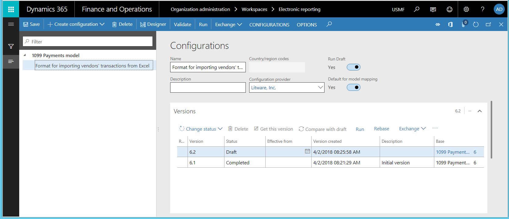
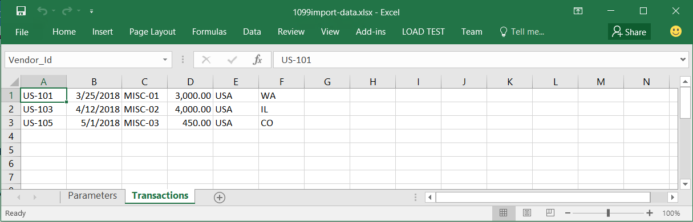
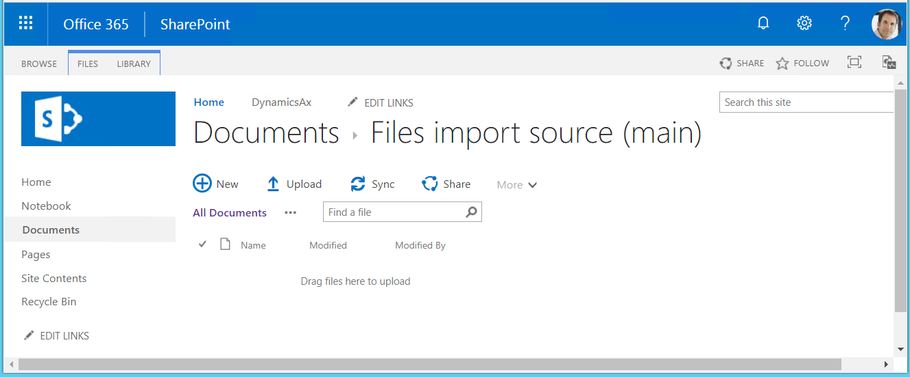
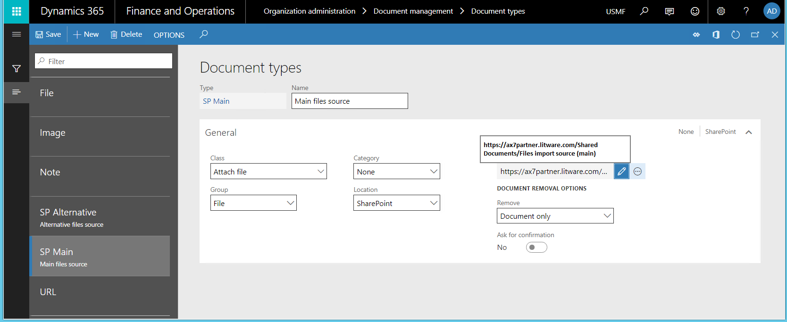

Datenimport aus SharePoint konfigurieren
[!include[banner](../includes/banner.md)]Um Daten aus einer eingehenden Datei mit Hilfe des Framework für elektronische Berichterstellung zu importieren, müssen Sie ein ER-Format konfigurieren, das den Import unterstützt und dann eine Modellzuordnung des Typs Bis Ziel ausführen, der dieses Format als Datenquelle verwendet. Um Daten zu importieren, müssen Sie zu der Datei navigieren, die Sie importieren möchten. Die eingehende Datei kann vom Benutzer manuell ausgewählt werden. Mit der neuen EB-Funktion zum Importieren von Daten aus Microsoft SharePoint kann dieser Prozess als unbeaufsichtigter Prozess konfiguriert werden. Sie können EB-Konfigurationen verwenden, um Daten aus Dateien zu importieren, die in Microsoft SharePoint-Ordnern gespeichert sind. In diesem Thema wird erläutert, wie der Import aus SharePoint durchgeführt wird. Die Beispiele verwenden Kreditorenbuchungen als Geschäftsdaten.
Voraussetzungen
Um die Beispiele in diesem Thema abzuschließen, müssen Sie den folgenden Zugriff haben:
Zugriff auf eine der folgenden Rollen:
- Entwickler für elektronische Berichterstellung
- Funktionaler Berater für elektronische Berichterstellung
- Systemadministrator
Zugriff auf die Instanz von Microsoft SharePoint Server, die für die Verwendung mit der Anwendung konfiguriert ist.
ER-Format und Modellkonfigurationen für US 1099-Steuerzahlungen.
Erforderliche ER-Konfigurationen erstellen
Geben Sie die Aufgabenleitfäden Daten aus einer Microsoft Excel-Datei mit EB importieren wieder, die Teil des 7.5.4.3 IT-Dienstleistungs-/-Lösungskomponenten anschaffen/entwickeln (10677)-Geschäftsprozess sind. Diese Aufgabenleitfäden führen Sie durch den Prozess des Entwurfs und die Verwendung von EB-Konfigurationen zum interaktiven Importieren von Kreditorenbuchungen aus Microsoft Excel-Dateien. Weitere Informationen finden Sie unter Eingangsdokumente im Excel-Format analysieren. Nachdem Sie die Aufgabenleitfäden abgeschlossen haben, können Sie die folgenden Einstellungen vornehmen.
ER-Konfigurationen
- ER-Modell-Konfiguration, US 1099-Steuerzahlungsmodell
- Konfiguration des ER-Formats, Format für den Import von Kreditorenbuchungen aus Excel

Beispiel der eingehenden Datei für das Importieren von Daten
- Excel-Datei 1099import-data.xlsx mit Kreditorenbuchungen, die importiert werden sollen.

Note
Das Format für den Import von Kreditorenbuchungen wird als Standardmodellzuordnung ausgewählt. Wenn Sie also eine Modellzuordnung des Typs US 1099-Steuerzahlungsmodell ausführen und diese Modellzuordnung vom Typ Bis Ziel ist, führt die Modellzuordnung dieses Format aus, um Daten aus externen Dateien zu importieren. Diese Daten werden dann zur Aktualisierung der Anwendungstabellen verwendet.
Konfigurieren des Zugriffs auf SharePoint für die die Dateispeicherung
Um elektronische Berichtdateien an einem SharePoint-Speicherort zu speichern, müssen Sie den Zugriff der SharePoint Server-Instanz konfigurieren, die vom aktuellen Unternehmen verwendet wird. In diesem Beispiel ist das Unternehmen USMF. Anweisungen hierzu finden Sie unter SharePoint-Speicher konfigurieren (This is an external link).
Führen Sie die Schritte in SharePoint-Speicher konfigurieren (This is an external link) aus.
Öffnen Sie die konfigurierte SharePoint-Site.
Setzt die folgenden Ordner, in denen eingehende elektronische Berichterstellungsdateien gespeichert werden können:
- Dateiimportquelle (primär) angezeigt (beispielsweise im Screenshot unten)
- Datei-Importquelle (alternativ)

(Optional) Setzt die folgenden Ordner, in denen eingehende elektronische Berichterstellungsdateien gespeichert werden können:
- Dateiarchivordner - Dieser Ordner steht für erfolgreich importierte Dateien.
- Dateien, die Ordner Warnung - Ordner wird dieser für Dateien werden, die mit einer Warnung importiert wurden.
- Dateifehlerordner - Dieser Ordner steht für fehlgeschlagenr importierte Dateien.
Wechseln Sie zu Organisationsverwaltungs > Dokumentenverwaltung > Dokumentarten.
Erstellen Sie die folgenden Dokumenttypen, die verwendet werden, um auf die SharePoint-Ordner zuzugreifen, die Sie erstellt haben. Weitere Informationen unter Konfigurieren Sie Dokumenttypen (This is an external link).
| Dokumenttyp | Gruppieren | Ziel | SharePoint-Ordner |
|---|---|---|---|
| SP-Haupt | Datei | SharePoint | Datei-Importquelle (primär) |
| SP Alternativ | Datei | SharePoint | Datei-Importquelle (alternativ) |
| SP Archiv | Datei | SharePoint | Datei-Archivordner |
| SP-Warnung | Datei | SharePoint | Datei-Warnungsordner |
| SP Fehler | Datei | SharePoint | Dateifehlerordner |

ER-Quellen für das ER-Format konfigurieren
Klicken Sie auf Organisationsverwaltung>Elektronische Berichterstellung>Elektronische Berichtsquelle.
Auf der Seite Elektronische Berichtsquelle konfigurieren Sie die Quelldateien für den Datenimport in dem konfigurierten ER-Format.
Definieren Sie eine Dateinamenmaske, sodass nur Dateien mit der .xlsx-Erweiterung importiert werden. Die Dateinamenmaske ist optional und wird nur verwendet, wenn sie definiert wurde. Sie können für jedes ER-Format nur eine Maske definieren.
Ändern Sie Dateien vor dem Importieren sortieren zu Nicht sortieren, wenn mehrere Dateien importiert werden sollen und der Importauftrag nicht wichtig ist.
Wählen Sie alle SharePoint-Ordner aus, die Sie zuvor erstellt haben.
{kind=link}
Note
- Die ER Quelle wird für jedes Anwendungsunternehmen einzeln definiert. Im Gegensatz dazu werden ER Konfigurationen unternehmensübergreifend genutzt.
- Wenn Sie eine ER-Quelleneinstellung für ein ER-Format löschen, werden auch alle angeschlossenen Dateizustände (siehe unten) gelöscht.
Überprüfen der Dateizustände für das ER-Format
Auf der Seite Elektronische Berichtsquelle wählen Sie Dateistatus für die Quellen, um den Inhalt der konfigurierten Dateiquellen für das aktuelle ER-Format zu überprüfen.
Überprüfen Sie im Abschnitt Dateien die Liste der Dateien. Diese Liste stellt Folgendes dar:
- Quelldateien, die auf der Grundlage der Dateinamensmaske (falls eine Dateinamensmaske definiert ist) anwendbar und für den Datenimport bereit sind. Für diese Dateien ist der Bereich Quellprotokoll für das Importformat leer.
- Zuvor importierte Dateien. Für jede dieser Dateien können Sie im Protokoll Quellprotokoll für das Importformat, den Verlauf des Imports dieser Datei einsehen.
Sie können auch die Seite Dateistatus für die Quellen öffnen, indem Sie Organisationsverwaltung > Elektronische Berichterstellung > Dateistatus für die Quellen auswählen. In diesem Fall enthält die Seite Informationen über Dateiquellen für alle ER-Formate, für die die Dateiquellen in dem Unternehmen konfiguriert wurden, in dem Sie derzeit angemeldet sind.
Importieren von Daten aus Excel-Dateien, die sich in einem SharePoint-Ordner befinden
Laden Sie in SharePoint die Microsoft Excel-Datei 1099import-data.xlsx, die Kreditorenbuchungen enthält, in den SharePoint-Ordner Datei-Importquelle (primär) hoch, den Sie zuvor erstellt haben.
Wählen Sie auf der Seite Dateistatus für die Quellen Aktualisieren, um die Seite zu aktualisieren. Die Excel-Datei, die in SharePoint hochgeladen wurde, wurde auf dieser Seite mit dem Status Bereit angezeigt. Die folgenden Status werden derzeit unterstützt:
- Bereit – Wird automatisch für jede neue Datei in einem SharePoint-Ordner zugewiesen. Dieser Status bedeutet, dass die Datei für den Import bereit ist.
- Importieren - Wird automatisch von einem ER-Bericht zugewiesen, wenn die Datei durch den Importprozess gesperrt wird, um ihre Verwendung durch andere Prozesse zu verhindern (wenn viele von ihnen gleichzeitig laufen).
- Importiert - Wird automatisch von einem ER-Bericht zugewiesen, wenn der Datei-Import erfolgreich abgeschlossen wurde. Dieser Status bedeutet, dass die importierte Datei aus der konfigurierten Dateiquelle (SharePoint-Ordner) gelöscht wurde.
- Fehlgeschlagen - Wird automatisch von einem ER-Report zugewiesen, wenn der Dateiimport mit Fehlern oder Ausnahmen abgeschlossen wurde.
- Gesperrt - Wird vom Benutzer auf dieser Seite manuell vergeben. Dieser Status bedeutet, dass die Datei vorerst nicht importiert wird. Dieser Status kann verwendet werden, um das Importieren einiger Dateien zu verschieben.
{kind=link}
{kind=link}
Importieren von Daten aus SharePoint-Dateien
Öffnen Sie den ER-Konfigurationsstruktur, wählen Sie das US 1099-Steuerzahlungsmodell und erweitern Sie die Liste der ER-Modellkomponenten.
Wählen Sie den Namen der Modellzuordnung, um die Liste der Modellzuordnungen der ausgewählten ER-Modellkonfiguration zu öffnen.
Wählen Sie Ausführen aus, um die ausgewählte Modellzuordnung auszuführen. Da Sie die Dateiquellen für das ER-Format konfiguriert haben, können Sie die Einstellung der Option Dateiquelle beliebig ändern. Wenn Sie die Einstellung dieser Option beibehalten, werden die XSLX-Dateien aus den konfigurierten Quellen (in diesem Beispiel die SharePoint-Ordner) importiert.
In diesem Beispiel importieren Sie nur eine Datei. Wenn jedoch mehrere Dateien vorhanden sind, werden sie in der Reihenfolge, in der sie dem SharePoint-Ordner hinzugefügt wurden, für den Import ausgewählt. Jede Ausführung eines ER-Formats importiert eine einzelne ausgewählte Datei.
Die Modellzuordnung kann unbeaufsichtigt im Stapelverarbeitungsmodus ausgeführt werden. In diesem Fall wird jedes Mal, wenn eine Stapelverarbeitung dieses ER-Format ausführt, eine einzelne Datei aus den konfigurierten Dateiquellen importiert.
Wenn eine Datei vom SharePoint-Ordner erfolgreich importiert wird, wird diese aus diesem Ordner gelöscht und wechselt in den Ordner für erfolgreich importierte Dateien oder den Ordner zu importierten Dateien mit Warnungen. Andernfalls hat diese zu dem Ordner für fehlgeschlagene Dateien oder bewegt verbleibt in diesem Ordner, wenn den Ordnern für fehlgeschlagene Dateien nicht installiert ist.
Geben Sie die Belegkennung, z. B. V-00001 ein, und wählen Sie dann OK aus.
Wählen Sie auf der Seite Dateistatus für die Quellen Aktualisieren, um die Seite zu aktualisieren.
Überprüfen Sie im Abschnitt Dateien die Liste der Dateien. Der Abschnitt Quellenprotokoll für das Importformat liefert den Verlauf des Excel-Dateiimports. Da diese Datei erfolgreich importiert wurde, wird sie im SharePoint-Ordner als Gelöscht markiert.
Überprüfen Sie den SharePoint-Ordner Datei-Importquelle (primär). Die erfolgreich importierten Excel-Dateien wurden aus diesem Ordner gelöscht.
Wählen Sie Kreditorenkonten > Periodische Aufgaben > Steuererklärung (US 1099) > Kreditorenausgleich für Steuererformulare (US 1099s) aus.
Geben Sie in den Feldern Startdatum und Enddatum entsprechende Werte ein. Wählen Sie dann Manuelle US 1099-Buchungen aus.
Die Kreditorenbuchungen, die aus den Excel-Dateien auf SharePoint für Beleg V-00001 importiert wurden, werden auf der Seite dargestellt.
{kind=link}
{kind=link}
{kind=link}
{kind=link}
{kind=link}
Vorbereitung einer Excel-Datei für den Import
Öffnen Sie die zuvor verwendete Excel-Datei. Fügen Sie in Zeile 3 Spalte 1 einen Kreditorencode hinzu, der in der Anwendung nicht vorhanden ist. Fügen Sie der Zeile zusätzliche falsche Kreditoreninformationen hinzu.
Laden Sie die aktualisierte Excel-Datei mit den Kreditorenbuchungen in den SharePoint-Ordner Datei-Importquelle (primär) hoch.
Öffnen Sie den ER-Konfigurationsstruktur, wählen Sie das US 1099-Steuerzahlungsmodell und erweitern Sie die Liste der ER-Modellkomponenten.
Wählen Sie den Namen der Modellzuordnung, um die Modellzuordnung zu aktualisieren, so dass der falsche Kreditorencode beim Datenimport als Fehler angesehen wird.
Wählen Sie Designer aus.
Auf der Registerkarte Prüfungen müssen Sie die Nach-Validierungs-Aktivität für die Validierungsregel ändern, die konfiguriert wurde, um auszuwerten, ob das importierte Kreditorenkonto in der Anwendung existiert. Aktualisieren Sie den Wert des Felds Nach-Validierungs-Aktivität auf Ausführung beenden, speichern Sie die Änderungen und schließen Sie die Seite.
Speichern Sie Ihre Änderungen und schließen Sie den ER-Modellzuordnungsdesigner.
Wählen Sie Ausführen aus, um die geänderte Modellzuordnung auszuführen.
Geben Sie die Belegkennung, z. B. V-00002 ein, und wählen Sie dann OK aus.
Das Infolog enthält die Benachrichtigung, dass sich im SharePoint-Ordner eine Datei befindet, die ein falsches Lieferantenkonto enthält und nicht importiert werden kann.
Auf der Seite Dateistatus für die Quellen wählen Sie Aktualisieren und überprüfen Sie dann im Abschnitt Dateien die Liste der Dateien.
{kind=link}
{kind=link}
{kind=link}
{kind=link}
Der Bereich Quellprotokoll für das Importformat zeigt an, dass der Importprozess fehlgeschlagen ist und sich die Datei noch im SharePoint-Dateifehlerordner befindet (das Kontrollkästchen Ist gelöscht ist nicht aktiviert). Wenn Sie diese Datei für SharePoint korrigieren, indem Sie den korrekten Kreditorencode hinzufügen und dann in den SharePoint-Ordner "Datei-Importquelle (primär)" verschieben, können Sie die Datei erneut importieren.
Wählen Sie Kreditorenkonten > Periodische Aufgaben > Steuererklärung (US 1099) > Kreditorenausgleich für Steuerformulare (US 1099) aus, geben Sie die entsprechenden Werte in die Felder Startdatum und Enddatum ein, und wählen Sie dann Manuelle US 1099-Buchungen aus.
Nur Transaktionen für Beleg V-00001 sind verfügbar. Es sind keine Transaktionen für den Beleg V-00002 verfügbar, obwohl der Fehler für die zuletzt importierte Transaktion in der Excel-Datei gefunden wurde.
Einschränkungen
Das EB-Framework bietet nicht die Möglichkeit, einen neuen Batch-Auftrag zu initiieren, der im unbeaufsichtigten Modus eine Modellzuordnung für den Datenimport ausführt. Dazu müssen Sie eine neue Logik entwickeln, damit die konfigurierte EB-Modellzuordnung über die Benutzeroberfläche der Anwendung aufgerufen werden kann, um Daten aus eingehenden Dateien zu importieren. Daher sind einige technische Arbeiten erforderlich.
Weitere Informationen zur relevanten EB-API finden Sie im Abschnitt Code zum Ausführen einer Formatzuordnung für den Datenimport (This is an external link) im Thema Änderungen an der Framework-API für elektronische Berichterstellung für Application Update 7.3 (This is an external link).
Überprüfen Sie den Code in der Klasse BankImport_RU des Modells Application Suite, um zu sehen, wie Ihre benutzerdefinierte Logik implementiert werden kann. Diese Klasse erweitert die Klasse RunBaseBatch. Überprüfen Sie insbesondere die Methode runER(), bei der das Objekt ERIModelMappingDestinationRun zur Ausführung einer EB-Modellzuordnung erstellt wird.